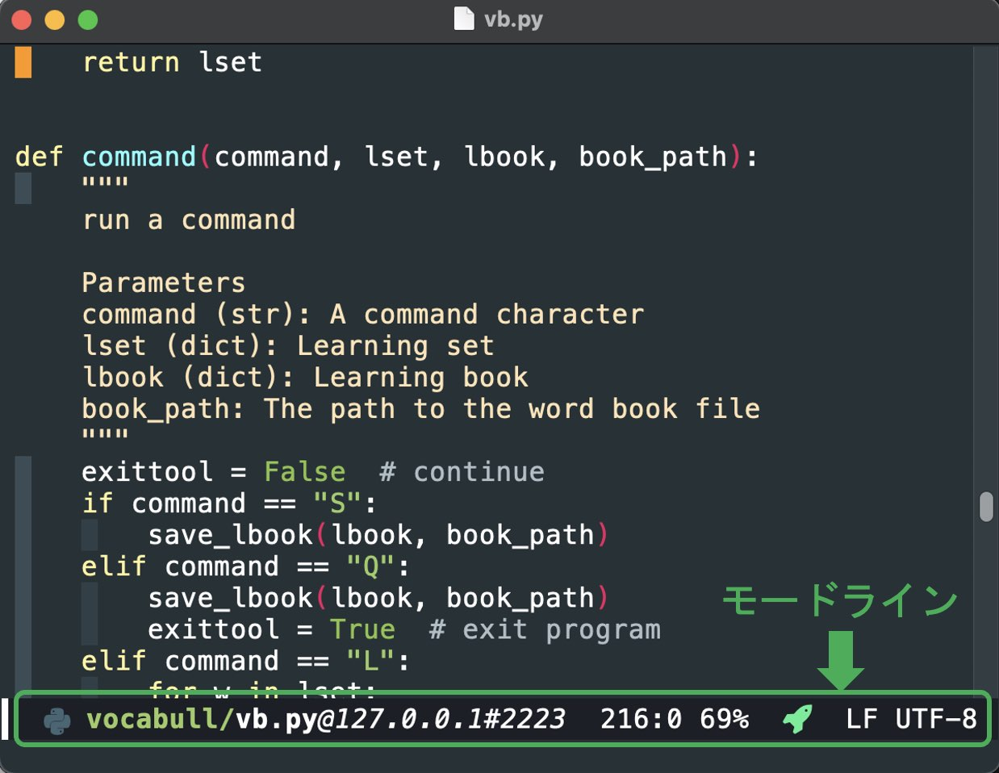
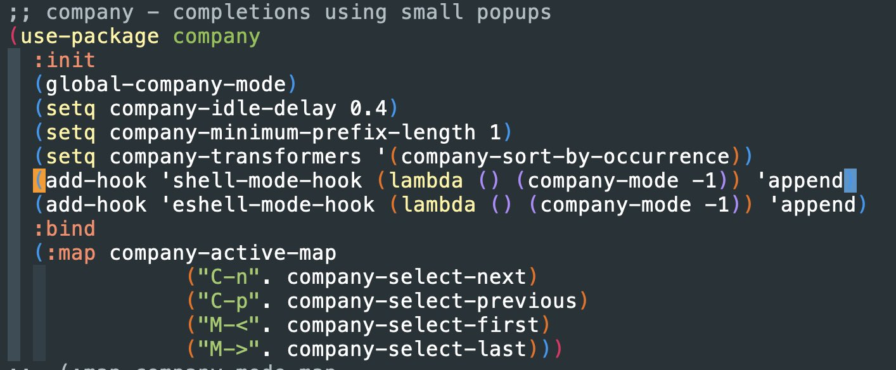
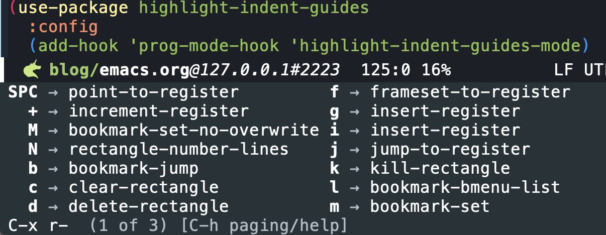
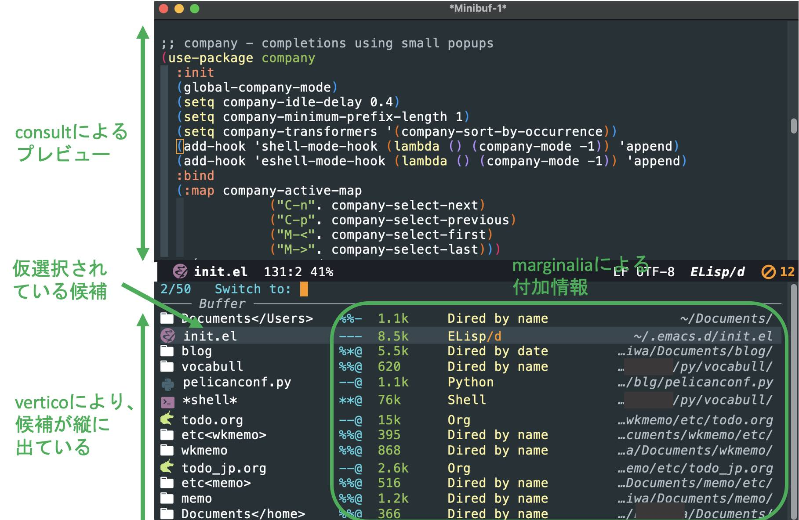
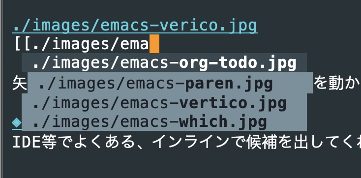
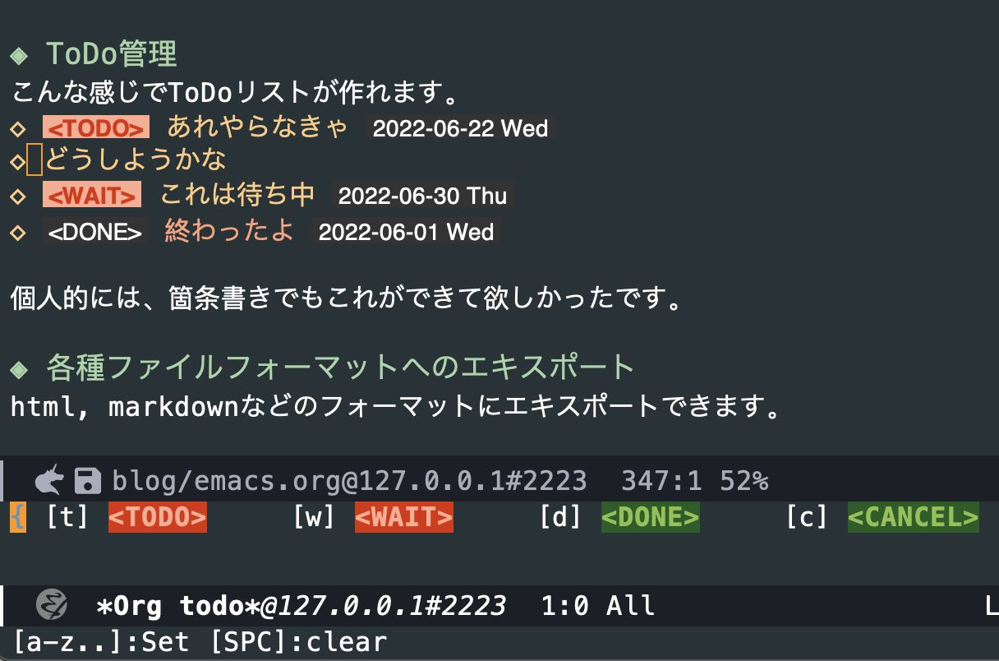

Table of Contents
- 1. はじめに
- 2. emacsについて
- 3. 使っている機能とconfig
- 3.1. パッケージソースを追加
- 3.2. use-package
- 3.3. materialテーマ と doomモードライン
- 3.4. 雑多な設定
- 3.5. dired
- 3.6. ソースファイルを見やすくする設定
- 3.7. which-key
- 3.8. undo-tree
- 3.9. Completion系パッケージ
- 3.10. Python
- 3.11. 16インチMacBook Pro用設定
- 3.12. email設定
- 3.13. shell-mode
- 3.14. org-mode
- 3.15. magit
- 3.16. tramp-mode
- 3.17. GUIモード
- 3.18. avy
- 3.19. pdf-tools
- 3.20. eww
- 3.21. ace-link
- 3.22. 入れようとしてうまくいかなかったパッケージ。。。
- 4. init.el
フレーム#+HTML_HEAD: <link rel="stylesheet" type="text/css" href="org.css" />
2022-06-22に作成したエントリーですが、大幅に加筆修正して新エントリーとしました。
1 はじめに
業務効率を上げるために、emacsの使いこなしに注力しています。元々org-modeによるドキュメント書きやPythonスクリプト開発にしか使っていなかったのですが、最近以下の機能、パッケージを使うようになり、50年前からあるツールとは思えないくらい使い勝手が向上しました。
- use-package
- magit
- vertico + fussy + marginalia + consult + corfu
- GUIモード
- tramp-mode
- dired
- shellモード
- avy
- pdf-tools
- eww
2 emacsについて
emacsはOSだと言われることがありますが、コンピューターを使いやすくするための基本ソフトという意味において、意外と的をいていると感じています。
emacsは今まで無かった何か新たな価値をもたらすアプリケーションではありません。既存の用途であるプログラミング環境、メモやドキュメント書き、ドキュメント閲覧、シェル、etc. といったアプリケーションにemacsの操作性と機能(=付加価値)を持ち込むことで、より使いやすくできることがemacsの本質ではないかと思います。
例えば、
- 文字単位だけでなく、単語や文章、パラグラフ単位での高速カーソル移動
- リモートマシンをローカルマシン同様、シームレスにアクセス(tramp)
- インクリメンタルサーチや正規表現を使ったサーチを始めとする検索機能
- 強力なコンプリーション機能
- そして、これらを使うための統一された操作性
一度emacsに慣れてしまうと、コンピューター上でできる多くのことをemacs上でやりたくなります。私はwebサイト閲覧までemacsでやろうとする人たちを長い間理解できませんでした。emacs上のテキストベースのブラウザーではモダンなWebサイトのデザインやjavascriptの実行環境は用意できないため、FireFoxなどのブラウザーと比べてユーザーエクスペリエンスが劣ってしまうと考えたためです。
しかし使ってみると、ブログを始めとするテキスト主体のサイトはテキストベースのブラウザーと意外にも相性が良いことがわかりました。しかも、webページ内の検索やコピペは慣れ親しんだemacsのキーバインドで操作可能です。広告やアニメーションなどの気が散る要因もありません。必要になったら & キーを押して、外部のブラウザーでWebページを表示させることもできます。
また、emacsの機能や操作性は、あなた好みにカスタマイズ可能です。むしろ、emacsに匹敵するカスタマイズ機能を持つアプリケーションは存在しません。emacs lisp(elisp)で書かれた大半の機能は、elispで書き換え可能です。キーバインドの変更もelispを1行書いてその場で実行(evaluate)するだけ。
emacsはelispマシンであり、elispを書くことはemacsを書き換えることを意味します。これって結構すごいことだと思います。通常は、せいぜいベンダーの用意したカスタマイズメニューを操作したり設定ファイルを書き換えたりするくらいです。オープンソースのソフトウエアにしても、コンパイルせずに、実行時に自身を書き換えられるソフトウエアはemacsくらいだと思います。
惜しむらくは、emacsは既にemacsに慣れているパワーユーザー向けにデザインされているため、慣れるのに時間がかかることです。今の時代に、数週間から1ヶ月も修行しないと使えるレベルにならないツールに興味を持つ人は少数派と思います。
しかしある一線を越えると、非常に生産性の高い唯一無二の世界が待っていますので、少しでも興味があって、勉強や試行錯誤してもよいという方は是非ともemacsを使っていただきたいと思います。
リンク:
3 使っている機能とconfig
3.1 パッケージソースを追加
(require 'package)
(setq package-archives
'(("gnu" . "http://elpa.gnu.org/packages/")
("melpa" . "http://melpa.org/packages/")
("nongnu" . "https://elpa.nongnu.org/nongnu/")
("org" . "http://orgmode.org/elpa/")))
(package-initialize)
(when (not package-archive-contents)
(package-refresh-contents))
最近のemacsバージョンでは、これを入れただけで、gnuにアクセスできないだの、645357D2883A0966のpublic keyが無いだの文句を言われて途方に暮れるかもしれません。その場合、以下が効くかも。(キーをインポートしています。それくらいしておいてくれたらいいのに。。。)
gpg --homedir ~/.emacs.d/elpa/gnupg --keyserver hkp://keyserver.ubuntu.com --recv-keys 645357D2883A0966
その後emacs内で、更におまじないを。
M-x package-refresh-contents
3.2 use-package
emacsの追加機能(パッケージ)は ~/.emacs.d/init.el で設定しますが、これを見やすく、書きやすくするありがたいパッケージです。パッケージの自動インストールもしてくれます(私の環境では動かないことも多いですが)。
パッケージのgithub READMEには、use-packageを使った設定の説明が増えてきていて、多くのemacsユーザーに浸透しています。日本ではより高機能な leaf が有名ですね。
;; for use-package (unless (package-installed-p 'use-package) (package-install 'use-package)) (require 'use-package) (setq use-package-always-ensure t)
3.3 materialテーマ と doomモードライン
テーマは好き嫌いがあると思いますが、私はmaterialテーマを好んで使っています。
doomモードラインは、画面の下から2行目にある情報表示行のモードラインをcoolにしてくれるパッケージです。ミニマリストデザインで格好よく、視認性がとても良いです。下記イメージはmaterialテーマを適用しています。緑枠で囲った部分がモードラインです。

~/.emacs.d/init.el には以下を設定しています。
;; Material theme (load-theme 'material t) ;; doom modeline (use-package doom-modeline :init (doom-modeline-mode 1))
materialが無いよ、と怒られるので、M-x list-packagesからmaterial-themeを入れます。
3.4 雑多な設定
- スタートアップメッセージは不要です。
- バックアップファイルも不要です。
- カーソル位置はモードラインにシンプルに表示します。
- スクロールは1ライン単位が見やすいと思います。
- 耳障りな音は元から絶ちます。
- いちいち"yes" "no"を入れるのが面倒なので、'y' 'n'にします。
- メニューバーやツールバーは不要です。
;; No startup message (setq inhibit-startup-message t) ;; no backup files (setq make-backup-files nil) (setq auto-save-default nil) ;; Delete auto-save files (setq delete-auto-save-files nil) ;; columm and line number (column-number-mode t) ;; 1-line scroll (setq scroll-conservatively 1) ;; silence bell (setq ring-bell-function 'ignore) ;; yes or no to y or n (fset 'yes-or-no-p 'y-or-n-p) ;; hide menu/tool bar (menu-bar-mode 0) (tool-bar-mode 0)
3.5 dired
ls -la (かな?)の画面を見ながら、ディレクトリやファイル操作ができるモードです。PC98の頃に流行ったファイラー(FD, FILMTNには昔お世話になりました)に似ています。キー操作を覚えるのが面倒ですが、使いこなせばかなり便利です。私はキーバインドをすぐに忘れるので、チートシートを用意しています:
C-x d: run direds: アルファベット順、時系列ソートトグル<>: 手前、次のディレクトリへ^: 親ディレクトリを開くv: 現在のファイルを閲覧(view mode)+: サブディレクトリ作成=: diffm: マークu/U: マーク解除/全解除C: コピーR: リネームM: chmodZ: gzip/gunzipM-x find-name-dired: パターンマッチするファイルをdiredM-x find-grep-dired: パターンを含むファイルをdired
;; dired (require 'dired-x)
3.6 ソースファイルを見やすくする設定
- rainbow-delimiters - 対応するカッコを色分けして表示してくれます。視認性が上がります。
- カーソル位置にあるカッコの対となるカッコを強調表示します。これも便利です。
- highlight-indent-guides - インデントを視覚的に見やすく表示してくれます。Pythonのようにインデントでブロックが決まる言語ではとても有用です。
下記はinit.elの、カッコのネストが深い部分です。カーソルをカッコの位置に動かし、対応カッコ共にハイライトさせてみました。画面左にある濃いグレーの縦棒はインデントを表しています。

;; rainbow-delimiters (use-package rainbow-delimiters :hook (prog-mode . rainbow-delimiters-mode)) ;; Blink corresponding paren (show-paren-mode 1) ;; visualize indent (use-package highlight-indent-guides :config (add-hook 'prog-mode-hook 'highlight-indent-guides-mode) :custom (highlight-indent-guides-method 'column))
3.7 which-key
emacsでは、 C-x C-c や C-x r l のように複数ストロークのキーバインドが珍しくありませんが、キーを打つ度にヒントを出してくれるのが which-key です。チートシートの出番が減ります。
下記イメージは、 C-x r まで押したところ。(使うのは l か m)

;; key binding hint (use-package which-key :defer 0 :config (which-key-mode) (setq which-key-idle-delay 0.3))
3.8 undo-tree
emacs 28以降で使えるundo-treeを視覚化して使いやすくするツールです。 undoしすぎたり、何がなんだかわからなくなった時にとても便利。ツリー表示してくれます。
;; visual undo-tree for emacs-28
(use-package vundo
:bind (("C-x u" . vundo)
("C-/" . undo-only)
("C-?" . undo-redo))
:config
(setq vundo-glyph-alist vundo-ascii-symbols))
3.9 Completion系パッケージ
私が最近存在を知り、作業効率が劇的に向上したのがこれらの補完系パッケージです。
3.9.1 fussy
キーワードの順序を気にせず、人間の感覚に沿った補完をしてくれる補助パッケージです。使い勝手に大きく影響するので、ぜひ入れましょう。(orderlessから移行しました)
(use-package fussy :ensure t :config (push 'fussy completion-styles) (setq completion-category-defaults nil completion-category-overrides nil)) ;; Corfu integration (advice-add 'corfu--capf-wrapper :before 'fussy-wipe-cache) (add-hook 'corfu-mode-hook (lambda () (setq-local fussy-max-candidate-limit 5000 fussy-default-regex-fn 'fussy-pattern-first-letter fussy-prefer-prefix nil))) ;; eglot intgration (with-eval-after-load 'eglot (add-to-list 'completion-category-overrides '(eglot (styles fussy basic))))
3.9.2 vertico - VERTical Interactive COmpletion
補完候補を縦に表示します。次のmarginaliaとセットで使うことで、ものすごく使いやすくなります。
;; vertico - vertial completion (use-package vertico :init (vertico-mode 1) :config (setq vertico-count 14)) (use-package savehist :init (savehist-mode 1))
3.9.3 marginalia
verticoを使って補完候補を縦に表示したとき、空いているスペースに有用な情報を表示してくれます。気が利いています。見た目もいい感じになります。
;; marginalia - rich annotations (use-package marginalia :init (marginalia-mode)) (use-package all-the-icons ;; M-x all-the-icons-install-fonts required :if (display-graphic-p)) (use-package all-the-icons-completion :after (marginalia all-the-icons) :hook (marginalia-mode . all-the-icons-completion-marginalia-setup) :init (all-the-icons-completion-mode))
コメントにあるように、 all-the-icons をインストールしておくと、見た目がとてもcoolになります。
インストールは M-x all-the-icons-install-fonts で行います。このアイコンはdoomモードラインでも使用されるので、是非インストールしてください。
3.9.4 consult
説明を読んでも今ひとつピンとこないのですが、カーソルのある選択候補をプレビューしてくれるパッケージです。作業効率が向上するので是非。
;; consult - preview everything
(use-package consult
:bind (("C-x b" . consult-buffer)
;; ("M-g g" . consult-goto-line) ;; line number
("M-g o" . consult-outline)
("M-s f" . consult-find)
("M-s l" . consult-line) ;; key word
("M-s g" . consult-grep)))
下記イメージは、 C-x b でバッファ切り替えの画面を出したところです。verticoにより切り替え候補のバッファが縦に表示されていて、それらにmarginaliaによる付加情報が付いています。init.elが仮選択されていて、そのプレビュー画面が画面上部に表示されています。

矢印キーや C-n C-p で仮選択候補を動かすと、次の候補がプレビューされます。かなり便利です。
3.9.5 corfu
IDE等でよくある、インラインで候補を出してくれるパッケージです。company-mode から移行しました。若干クセのあったcompany-modeと比べて、だいぶ自然になっていると思います。

スクリーンショットはcompany-modeのものです。。。更に、cape という、corfu作者によるcompletion extensionも入れています。いろいろと便利になるようです。
;; corfu - in-buffer completion with a small popup (use-package corfu :ensure t :custom ((corfu-auto t) (corfu-auto-prefix 2) (corfu-auto-delay 0.4) (corfu-cycle t)) :init (global-corfu-mode) (corfu-popupinfo-mode)) ;; completion-at-point extensions (use-package cape :ensure t :init ;; Add `completion-at-point-functions', used by `completion-at-point'. (add-to-list 'completion-at-point-functions #'cape-file) (add-to-list 'completion-at-point-functions #'cape-dabbrev) ;; (add-to-list 'completion-at-point-functions #'cape-history) (add-to-list 'completion-at-point-functions #'cape-keyword) ;; (add-to-list 'completion-at-point-functions #'cape-tex) ;; (add-to-list 'completion-at-point-functions #'cape-sgml) ;; (add-to-list 'completion-at-point-functions #'cape-rfc1345) ;; (add-to-list 'completion-at-point-functions #'cape-abbrev) ;; (add-to-list 'completion-at-point-functions #'cape-ispell) ;; (add-to-list 'completion-at-point-functions #'cape-dict) ;; (add-to-list 'completion-at-point-functions #'cape-symbol) ;; (add-to-list 'completion-at-point-functions #'cape-line) )
リンク:
3.10 Python
以前のエントリー でも書きましたが、elpyからtramp-modeに対応するlsp+eglotに乗り換えました。
- flycheck - オンザフライでシンタックスチェックしてくれます。flymakeよりこちらを。
- blacken - Pythonファイルをセーブする際に構文チェックして、強制的に規定ルールに合わせてくれます。行儀の良いコードを書く自信のない人はぜひ。
- pyvenv - Pythonの仮想環境をemacsでも。
- eglot - emacsをIDE(統合開発環境)化してくれるパッケージ(フロントエンド)です。
- Python用lspサーバー - eglotはフロントエンドで、こちらがサーバーです。pipでインストールし、サーバーとして動かしておきます。
pip install 'python-lsp-server[all]'
- tramp-remote-path設定 - tramp機能で、別マシン上で動くPython LSPサーバーにつなげに行く時に必要だった設定をしています。
;; Flycheck
(use-package flycheck
:init
(add-hook 'after-init-hook 'global-flycheck-mode))
(use-package flycheck-inline
:init
(with-eval-after-load 'flycheck
(add-hook 'flycheck-mode-hook #'flycheck-inline-mode)))
(use-package flycheck-eglot
:ensure t
:after (flyckeck eglot)
:config
(global-flycheck-eglot-mode 1))
;; black
(use-package blacken
:config
(add-hook 'python-mode-hook 'blacken-mode))
;; suppress warnings
(setq python-indent-guess-indent-offset-verbose nil)
;; pyvenv
(use-package pyvenv
:config
(pyvenv-mode 1))
;; eglot - lsp client
(use-package eglot)
(add-to-list 'eglot-server-programs
'(python-mode "pylsp"))
(use-package python-mode
:ensure nil
:hook
(python-mode . eglot-ensure)
(js-mode . eglot-ensure))
;; need this for eglot to find pylsp in a remote server
(add-to-list 'tramp-remote-path 'tramp-own-remote-path)
リンク:
3.11 16インチMacBook Pro用設定
- 老眼の入った目には、デフォルトフォントは小さすぎるので、大きめフォントを指定します
- emacsがmacOSのシェルからパス設定を取得できるようにしています
(if (display-graphic-p)
(set-face-attribute 'default nil :height 160))
(when (memq window-system '(mac ns x))
(exec-path-from-shell-initialize))
3.12 email設定
- notmuch - emailパッケージです。trampモードと連動し、リモート置いてあるメールにアクセスできます。emacs用メーラーとしてはmu4eが人気ですが、mu4eはtrampとの相性が良くないようです。若干微妙なところもありますが(eg, Z(スレッド表示)で固まったり。。。)、だましだまし使っています。何より、emacsのキーバインドでメールが打てるのがうれしいです。というか、web板gmailの操作性は悪すぎでしょう。まともにメールを書く気になれません。
- smtp設定 - メールを出すための設定です。
(use-package notmuch
:commands notmuch-hello
:bind (("C-c m" . notmuch-hello)))
(setq notmuch-command "~/bin/remote-notmuch.sh")
(setq message-send-mail-function 'smtpmail-send-it
smtpmail-starttls-credentials '(("smtp.gmail.com" 587 nil nil))
smtpmail-auth-credentials '(("smtp.gmail.com" 587 "<emailアドレス>@gmail.com" nil))
smtpmail-default-smtp-server "smtp.gmail.com"
smtpmail-smtp-server "smtp.gmail.com"
smtpmail-smtp-service 587
starttls-use-gnutls t
)
(setq notmuch-search-oldest-first nil)
リンク:
3.13 shell-mode
emacs内で動くシェルはいくつかありますが、 M-x shell で起動する標準の shell モードを使っています。他に eshell や term モードがありますね。
C-p C-n で前後の候補を表示するのでなく、カーソルが動いてしまうことに戸惑いますが、 M-p M-n M-r が用意されていることに気がつけば大丈夫です。コントロールキーでなくメタキーを使うだけなので、覚えるのも容易です。このあたりのキーバインドは こちら 。
trampモードとの相性も良く、これのおかげでリモートマシンにsshで入る頻度がとても減りました。なお、デフォルトの/bin/shはbashへのシンボリックリンクだったりするので、その場合、わざわざbashに書き換えなくても大丈夫です。
複数のシェルを開くには、多少の 工夫 が必要なようです。なるほど、 C-u M-x shell で行けるのですね。
リンク:
3.14 org-mode
emacsのキラー機能である、高機能なアウトラインエディターです。私が今でもemacsを使い続ける最大の理由がこれです。これまで、各種wiki, MS WordやExcel, Evernote, Confluence等さまざまな文章書きツールを使ってきましたが、バージョン間やツール間の互換性、数々の不具合、UIや操作性の違い、使えるデバイス数の変更(Evernote…)に悩まされてきました。org-modeにはこれらの問題がありません。
3.14.1 テキストファイルである
org-modeの最大の特長は、orgファイルが単なるテキストファイルで、それを40年間変わらないemacsのUIを使って編集できることです。ファイルフォーマットの互換性問題が本質的にありません。
3.14.2 表の編集
文章を書いていると、情報を見やすく提示するために、表を挿入したくなることがありますよね。 そんな時に役に立つ機能です。
罫線として | - + あたりを使って、テキストファイル内に表を作ることができます。
タブキーを押すことで、罫線を補完したり、セルの幅をうまく調整してくれます。
ほとんど神がかった操作性を是非とも体験してみてください。
| item | details | number |
|---|---|---|
| apple | red and sweet and sour 林檎 | 10 |
| orange | orange and juicy 橙 | 25 |
| バナナ | 黄色くて安くて甘い | 15 |
残念な点もあります:
- 部分セルの結合、分割ができない(行や列全体の追加、削除はできる)
- セル内部でのテキストの折返しができない
- 表計算ソフトのように計算させることが若干面倒
リンク:
3.14.3 ToDo管理
こんな感じに見出し行にステータスを付加することで、ToDoリストが作れます。ToDoステータス(注: カスタマイズしています)はショートカットキーで付加、変更ができます。文字を手打ちしてもいいですが。
日付は(C-c . で)別途追記しました。
- <TODO> あれやらなきゃ
- <CANCEL> どうしようかな
- <WAIT> これは待ち中
- <DONE> 終わったよ
ブログ用にエキスポートしてしまうと微妙ですね。 (org-modernを適用した) emacs上ではこのように見えます:

C-c C-tまで押したところ。更にt(TODO)w(WAIT)d(DONE)c(CANCEL)を押すとステータスが入ります。init.elでの設定:;; Add to TODO status (setq org-todo-keywords '((sequence "<TODO>(t)" "<WAIT>(w)" "|" "<DONE>(d)" "<CANCEL>(c)")))個人的には、むしろ箇条書きでこれができて欲しかったです。どうしてできるようにしなかったんだろう?
リンク:
3.14.4 各種ファイルフォーマットへのエキスポート
html, markdownなどのフォーマットにエキスポートできます。いい感じの見た目になりますが、github/gitlabがorgファイルのレンダリングに対応していることで、個人的にはこれを使うことが激減しました。
3.14.5 クラウド連携
magitを使ってorgファイルをgithub, gitlabにpushすると、github/gitlabがorgファイルをいい感じにレンダリングして表示してくれるので、これらを使ったwikiが簡単に実現できてしまいます。もちろん、他のPCやスマホから、レンダリングされたorgファイルを閲覧(git設定すれば編集も)することができます。
プライベートレポジトリなら個人用wiki、パブリックなら公開wikiとして使えます。
リンク:
3.14.6 ブログ
初回 に書きましたが、このブログはorg-modeを使って書いています。
3.14.7 org-mode用設定
- org-modern - orgファイル編集画面をきれいに見やすく表示してくれます。単なるテキストファイルであるorgファイルをここまで見やすくしてくれるとは! これがあれば、もういちいちhtml等にエキスポートしなくてもよい!?
- org-hide-emphasis-markers - 不要なマーカーを隠して見た目をスッキリさせてくれます。地味にうれしい機能です。
- truncate-lines nil - (これ何だっけ?)
- org-modeでのオートインデントはオフにしています。
<s TAB<q TABなどでソースコードやクオートのブロックが入るショートカットです。超絶便利。これを知るまでは#+BEGIN_SRC〜#+END_SRCを手打ちしていました(汗)- To Do機能を使う場合のステータスを追加しています。
;; Modern-looking org-mode (requires installing org-modern)
(use-package org-modern
:hook (org-mode . org-modern-mode))
;; hide emphasis markup
(setq org-hide-emphasis-markers t)
;; disable org-mode truncate-lines
(add-hook 'org-mode-hook
(lambda () (setq truncate-lines nil)))
;; Suppress auto-indent for org-mode
;;(add-hook 'org-mode-hook '(lambda () (electric-indent-local-mode -1)))
(add-hook 'org-mode-hook (lambda () (electric-indent-local-mode -1)))
;; enable shortcuts such as <s + TAB
(require 'org-tempo)
;; Add to TODO status
(setq org-todo-keywords
'((sequence "<TODO>(t)" "<WAIT>(w)" "|" "<DONE>(d)" "<CANCEL>(c)")))
3.14.8 org-journal
個別に保存するほどのこともない、ちょっとしたメモはこちらで。
月単位にファイルを作り、 C-c j でorg-journalを起動した日時のセクションを作ります。
(use-package org-journal :ensure t :defer t :custom (org-journal-dir "~/py/memo/journal") (org-journal-date-format "%A, %d %B %Y") (org-journal-file-format "%Y%m%d.org") (org-journal-file-type 'monthly)) (global-set-key (kbd "C-c j") 'org-journal-new-entry)
3.15 magit
プログラマー系の人にとって、org-modeと並ぶemacsのキラーアプリです。emacs用のgitインタフェースなのですが、コマンドライン上でgitコマンド操作する場合に対して、作業効率が圧倒的に上がります。
プログラマーでなくても、orgモードで文書を書く人はその恩恵にあづかることができると思います。テキストファイルなのに、ヒストリーを持つバージョン管理ができるようになり、しかもgithub/gitlab等のクラウド連携が実現できます。
問題は、プログラマー系以外の人にとって git の敷居が高いということでしょうか。ITエンジニアなら是非とも身につけたいスキルですが。
M-x list-packagesからmagitをインストールしてください。 i で選択して x でインストールです。
リンク:
3.16 tramp-mode
リモートマシン上のファイル等を、まるでローカルにあるかのように扱える、emacsのキラー機能の一つです。代案としては、リモートマシンにsshして emacs -nw する、emacsの ウインドウをリモートから飛ばす 等がありますが、ローカルとリモートで扱えるファイルが完全に区別されてしまうのが難です。
trampは標準で入っているので、特に設定はいりません。例えばファイルをオープンする時(C-x C-f)に、 ` /ssh:username@hostname#port:/path/to/file を指定するだけです。すごい! ユーザー名やポート番号は省略できます。hostnameはIPアドレスでも行けます。
また、ローカルからリモートにファイルをコピーする時は、dired上でtrampの書式でリモートのコピー先を指定することで、ローカル同士であるかのようにファイルコピーが可能です。
もちろんタイムラグはありますし、trampと相性の悪いパッケージも多いです。それでも、一通りの機能はtrampで使えますし、何より、自分のローカルマシンで動いているemacsからリモートのファイルが扱えることは素晴らしいです。diredやmagitもtrampと連携して、まるで魔法のように動きます。
tramp-mode紹介ページへのリンク:
3.17 GUIモード
私は最近までターミナル上でemacsを使って(ie, emacs -nw)いました。sshでリモートマシンに入っても同じように使える(リモートでもemacsの設定をすれば)ので、十分重宝していました。しかし、emacsをより使いこなそうと色々なパッケージを試すうちに、あることに気が付きました。
ターミナルモードでは C-. 等いくつかの重要なキーバインドが使えないのです。私はなるべく標準のキーバインドで使いたいので、別のキーに割り当てることに躊躇しました。
思い切ってGUIモードに挑戦したところ、これまでターミナルモードで感じていた不自由さが解消されたことがわかりました。例えば、
- フォントサイズが(ターミナルのように全体でなく)部分毎に変わったり、部分を目立たせたりして、orgファイル等の視認性が上がる
- アイコンのビットイメージが表示される
- 画像が表示できる(遅いので使いませんが)
- そしてもちろん、全てのキーバインドが使える
というわけで、すっかりGUIモードに移行しました。
3.18 avy
まるでマウスでポイントするように、画面上の任意の箇所にカーソルを移動するパッケージ。複数ウインドウがあっても、ウインドウをまたいだ移動が可能です。これはすごいです。
私の設定では、 C-: に引き続き2,3文字入力すると(厳密には、最初のキーを押してから0.5秒以内に押した文字列)、その文字列の箇所が記号と共にハイライト表示され、記号でどの場所に移動するかを指定するとカーソルがそこに移動します。
時間指定の他、2文字入力した段階で移動候補がハイライトされるモードなどもあります。
ある意味、究極の少ストロークカーソル移動ですが、多少頭を使う必要があるため「手が勝手に動く」ようには使えません。全画面モードで複数のウインドウを使っているときなどに重宝します。
(use-package avy :ensure t) (global-set-key (kbd "C-:") 'avy-goto-char-timer) (global-set-key (kbd "M-g w") 'avy-goto-word-1)
3.19 pdf-tools
emacsでPDFファイルを閲覧できるようになります。PDFファイルを見ながら、ハイライトしたり、アノテーションを付与したり、別のファイルにメモを書いたりするような用途で重宝します。
emacsのウインドウにPDFファイルが表示でき、一部emacsのキーバインドで操作できるのはかなり便利。初回だけinit.elを読む時に長々とコンパイルが走り、ちょっと不安になりますが大丈夫です。
(use-package pdf-tools :demand t :init (pdf-tools-install))
3.20 eww
emacsに標準でついてくる、テキストベースのブラウザーです。もちろん、cssやjavascriptは使えません。
Webサイト閲覧までemacsでやる意味があるのかと懐疑的でしたが、テキスト主体のサイトを閲覧することが多いため、意外と重宝しています。
PDFと同様に全画面モードにして、左側にWebサイトを表示、右側にメモを書いたりしています。
このページ に使える設定がたくさん載っています。私は以下の設定をお借りしています。
(setq browse-url-browser-function 'eww-browse-url) (defun eww-disable-images () "eww で画像表示させない" (interactive) (setq-local shr-put-image-function 'shr-put-image-alt) (eww-reload)) (defun eww-enable-images () "eww で画像表示させる" (interactive) (setq-local shr-put-image-function 'shr-put-image) (eww-reload)) (defun shr-put-image-alt (spec alt &optional flags) (insert alt)) ;; はじめから非表示 (defun eww-mode-hook--disable-image () (setq-local shr-put-image-function 'shr-put-image-alt)) (add-hook 'eww-mode-hook 'eww-mode-hook--disable-image) (setq eww-search-prefix "https://duckduckgo.com/html/?k1=-1&kc=1&kf=-1&q=")
3.21 ace-link
ewwを入れたら絶対に欲しくなります。画面上に表示されているたくさんのリンクからavyを使って選択してジャンプします。ewwで検索した画面で o を押すとリンクがa,b,c…の記号付きでハイライトされるので、飛びたいリンクの記号を押すだけ。
ewwだけでなく、help, infoなどなどで使えます。この快適さはすごい。
M-x list-packagesで ace-link をインストールして、以下をinit.elにいれるだけ。
(ace-link-setup-default)
3.22 入れようとしてうまくいかなかったパッケージ。。。
3.22.1 emacs-slack
インストラクションを見ながら設定したのですが、登録がうまくできませんでした。
3.22.3 dslide
orgファイルをプレゼン用に表示、操作するパッケージ。インストールは簡単なのですが、文字の色を変えるだけでも面倒そうなので保留中。
4 init.el
現在使用しているinit.elです。余計な箇所もありますが、そのまま貼り付けておきます。
;;; init.el --- for MacBook Pro 16
;;; Commentary:
(require 'package)
(setq package-archives
'(("gnu" . "http://elpa.gnu.org/packages/")
("melpa" . "http://melpa.org/packages/")
("org" . "http://orgmode.org/elpa/")))
(package-initialize)
(when (not package-archive-contents)
(package-refresh-contents))
;; for use-package
(unless (package-installed-p 'use-package)
(package-install 'use-package))
(require 'use-package)
(setq use-package-always-ensure t)
(custom-set-variables
;; custom-set-variables was added by Custom.
;; If you edit it by hand, you could mess it up, so be careful.
;; Your init file should contain only one such instance.
;; If there is more than one, they won't work right.
'(package-selected-packages nil))
(custom-set-faces
;; custom-set-faces was added by Custom.
;; If you edit it by hand, you could mess it up, so be careful.
;; Your init file should contain only one such instance.
;; If there is more than one, they won't work right.
)
;; Material theme
(load-theme 'material t) ;; require material-theme
;; doom modeline
(use-package doom-modeline
:init (doom-modeline-mode 1))
;; No startup message
(setq inhibit-startup-message t)
;; no backup files
(setq make-backup-files nil)
(setq auto-save-default nil)
;; Delete auto-save files
(setq delete-auto-save-files nil)
;; columm and line number
(column-number-mode t)
;; 1-line scroll
(setq scroll-conservatively 1)
;; silence bell
(setq ring-bell-function 'ignore)
;; dired
(require 'dired-x)
;; yes or no to y or n
(fset 'yes-or-no-p 'y-or-n-p)
;; hide menu/tool bar
(menu-bar-mode 0)
(tool-bar-mode 0)
;; rainbow-delimiters
(use-package rainbow-delimiters
:hook (prog-mode . rainbow-delimiters-mode))
;; Blink corresponding paren
(show-paren-mode 1)
;; visualize indent
(use-package highlight-indent-guides
:config
(add-hook 'prog-mode-hook 'highlight-indent-guides-mode)
:custom
(highlight-indent-guides-method 'column))
;; key binding hint
(use-package which-key
:defer 0
:config
(which-key-mode)
(setq which-key-idle-delay 0.3))
;; add to load-path
(add-to-list 'load-path "~/.emacs.d/site-lisp")
;; for faster movements between windows
(global-set-key (kbd "M-o") 'other-window)
;; ====== undo ==========================================
;; visual undo-tree for emacs-28
(use-package vundo
:bind (("C-x u" . vundo)
("C-/" . undo-only)
("C-?" . undo-redo))
:config
(setq vundo-glyph-alist vundo-ascii-symbols))
;; ====== for mac ===========================================
(use-package exec-path-from-shell
:ensure t
:config
(when (memq window-system '(mac ns x))
(exec-path-from-shell-initialize)))
;; font settings for MacBook Pro 16
(if (display-graphic-p)
(set-face-attribute 'default nil :height 160))
(if (window-system)
(set-frame-height (selected-frame) 44))
;; ====== completion ========================================
;; better candidate filtering (was orderless)
(use-package fussy
:ensure t
:config
(push 'fussy completion-styles)
(setq
completion-category-defaults nil
completion-category-overrides nil))
;; Corfu integration
(advice-add 'corfu--capf-wrapper :before 'fussy-wipe-cache)
(add-hook 'corfu-mode-hook
(lambda ()
(setq-local fussy-max-candidate-limit 5000
fussy-default-regex-fn 'fussy-pattern-first-letter
fussy-prefer-prefix nil)))
;; eglot intgration
(with-eval-after-load 'eglot
(add-to-list 'completion-category-overrides
'(eglot (styles fussy basic))))
;; vertico - vertial completion
(use-package vertico
:init (vertico-mode 1)
:config (setq vertico-count 14))
(use-package savehist
:init (savehist-mode 1))
;; marginalia - rich annotations
(use-package marginalia
:init (marginalia-mode))
(use-package all-the-icons ;; M-x all-the-icons-install-fonts required
:if (display-graphic-p))
(use-package all-the-icons-completion
:after (marginalia all-the-icons)
:hook (marginalia-mode . all-the-icons-completion-marginalia-setup)
:init (all-the-icons-completion-mode))
;; consult - preview everything
(use-package consult
:bind (("C-x b" . consult-buffer)
("M-g g" . consult-goto-line) ;; line number
("M-g o" . consult-outline)
("M-s f" . consult-find)
("M-s l" . consult-line) ;; key word
("M-s g" . consult-grep)))
;; corfu - in-buffer completion with a small popup
;; (use-package corfu-terminal
;; :ensure t
;; :if (not (display-graphic-p))
;; :config
;; (corfu-terminal-mode +1))
(use-package corfu
:ensure t
:custom ((corfu-auto t)
(corfu-auto-prefix 2)
(corfu-auto-delay 0.4)
(corfu-cycle t))
:init
(global-corfu-mode)
(corfu-popupinfo-mode))
;; completion-at-point extensions
(use-package cape
:ensure t
:init
;; Add `completion-at-point-functions', used by `completion-at-point'.
(add-to-list 'completion-at-point-functions #'cape-file)
(add-to-list 'completion-at-point-functions #'cape-dabbrev)
;; (add-to-list 'completion-at-point-functions #'cape-history)
(add-to-list 'completion-at-point-functions #'cape-keyword)
;; (add-to-list 'completion-at-point-functions #'cape-tex)
;; (add-to-list 'completion-at-point-functions #'cape-sgml)
;; (add-to-list 'completion-at-point-functions #'cape-rfc1345)
;; (add-to-list 'completion-at-point-functions #'cape-abbrev)
;; (add-to-list 'completion-at-point-functions #'cape-ispell)
;; (add-to-list 'completion-at-point-functions #'cape-dict)
;; (add-to-list 'completion-at-point-functions #'cape-symbol)
;; (add-to-list 'completion-at-point-functions #'cape-line)
)
;; ====== org-mode settings =================================
;; Modern-looking org-mode (requires installing org-modern)
(use-package org-modern
:hook (org-mode . org-modern-mode))
;; hide emphasis markup
(setq org-hide-emphasis-markers t)
;; disable org-mode truncate-lines
(add-hook 'org-mode-hook
(lambda () (setq truncate-lines nil)))
;; Suppress auto-indent for org-mode
(add-hook 'org-mode-hook (lambda () (electric-indent-local-mode -1)))
;; org-mode export github-flavored markdown
;;(eval-after-load "org"
;; '(require 'ox-gfm nil t))
;; enable shortcuts such as <s + TAB
(require 'org-tempo)
;; Add to TODO status
(setq org-todo-keywords
'((sequence "<TODO>(t)" "<WAIT>(w)" "|" "<DONE>(d)" "<CANCEL>(c)")))
;; ====== eglot ============================================
;; Flycheck
(use-package flycheck
:init
(add-hook 'after-init-hook 'global-flycheck-mode))
(use-package flycheck-inline
:init
(with-eval-after-load 'flycheck
(add-hook 'flycheck-mode-hook #'flycheck-inline-mode)))
(use-package flycheck-eglot
:ensure t
:after (flyckeck eglot)
:config
(global-flycheck-eglot-mode 1))
;; black
(use-package blacken
:config
(add-hook 'python-mode-hook 'blacken-mode))
;; suppress warnings (is this needed?)
(setq python-indent-guess-indent-offset-verbose nil)
;; pyvenv
(use-package pyvenv
:config
(pyvenv-mode 1))
;; eglot - lsp client
(setq lsp-java-server-install-dir "/Users/kachiwa/.emacs.d/share/eclipse.jdt.ls")
(use-package eglot
:hook
(python-mode . eglot-ensure)
(js-mode . eglot-ensure))
;; (org-mode . eglot-ensure)
;; :config
;; (add-to-list 'eglot-server-programs
;; '(org-mode . ("efm-langserver"))))
;;(use-package python-mode
;; :ensure nil
;; :hook
;; (python-mode . eglot-ensure))
;; (js-mode . eglot-ensure))
;; (use-package eglot
;; :ensure t
;; :hook
;; ((python-mode . eglot-ensure))
;; :config
;; (add-to-list 'eglot-server-programs
;; '(python-mode . ("pylsp")))
;; (setq-default eglot-workspace-configuration
;; '((:pylsp . (:configurationSources ["flake8"] :plugins (:pycodestyle (:enabled nil) :mccabe (:enabled nil) :flake8 (:enabled t)))))))
;; ====== for java =========================================
(add-hook 'java-mode-hook 'eglot-java-mode)
(add-hook 'eglot-java-mode-hook
(lambda ()
(define-key eglot-java-mode-map (kbd "C-c l n") #'eglot-java-file-new)
(define-key eglot-java-mode-map (kbd "C-c l x") #'eglot-java-run-main)
(define-key eglot-java-mode-map (kbd "C-c l t") #'eglot-java-run-test)
(define-key eglot-java-mode-map (kbd "C-c l N") #'eglot-java-project-new)
(define-key eglot-java-mode-map (kbd "C-c l T") #'eglot-java-project-build-task)
(define-key eglot-java-mode-map (kbd "C-c l R") #'eglot-java-project-build-refresh)))
(setq lsp-java-server-install-dir "/Users/kachiwa/.emacs.d/share/eclipse.jdt.ls")
;; ====== for tramp mode ===================================
;; use rsync for copying
(use-package dired-rsync
:config
(bind-key "C-c C-r" 'dired-rsync dired-mode-map))
;; need this for eglot to find pylsp in a remote server
(add-to-list 'tramp-remote-path 'tramp-own-remote-path)
;; for M-x shell
(add-to-list 'tramp-connection-properties
(list (regexp-quote "/sshx:user@host:")
"remote-shell" "/bin/bash"))
;; ====== email =============================================
(use-package notmuch
:commands notmuch-hello
:bind (("C-c m" . notmuch-hello)))
(setq notmuch-command "~/bin/remote-notmuch.sh")
(setq message-send-mail-function 'smtpmail-send-it
smtpmail-starttls-credentials '(("smtp.gmail.com" 587 nil nil))
smtpmail-auth-credentials '(("smtp.gmail.com" 587 "achiwa912@gmail.com" nil))
smtpmail-default-smtp-server "smtp.gmail.com"
smtpmail-smtp-server "smtp.gmail.com"
smtpmail-smtp-service 587
starttls-use-gnutls t
)
;; ====== journal ==========================================
(use-package org-journal
:ensure t
:defer t
:custom
(org-journal-dir "~/py/memo/journal")
(org-journal-date-format "%A, %d %B %Y")
(org-journal-file-format "%Y%m%d.org")
(org-journal-file-type 'monthly))
(global-set-key (kbd "C-c j") 'org-journal-new-entry)
(pixel-scroll-precision-mode)
;;; init.el ends here